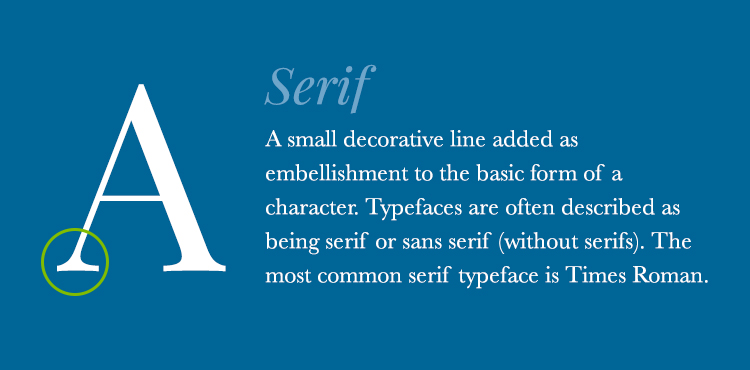
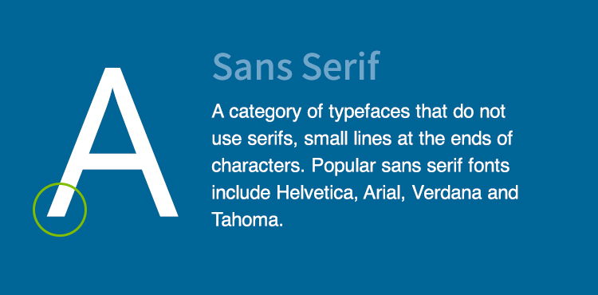
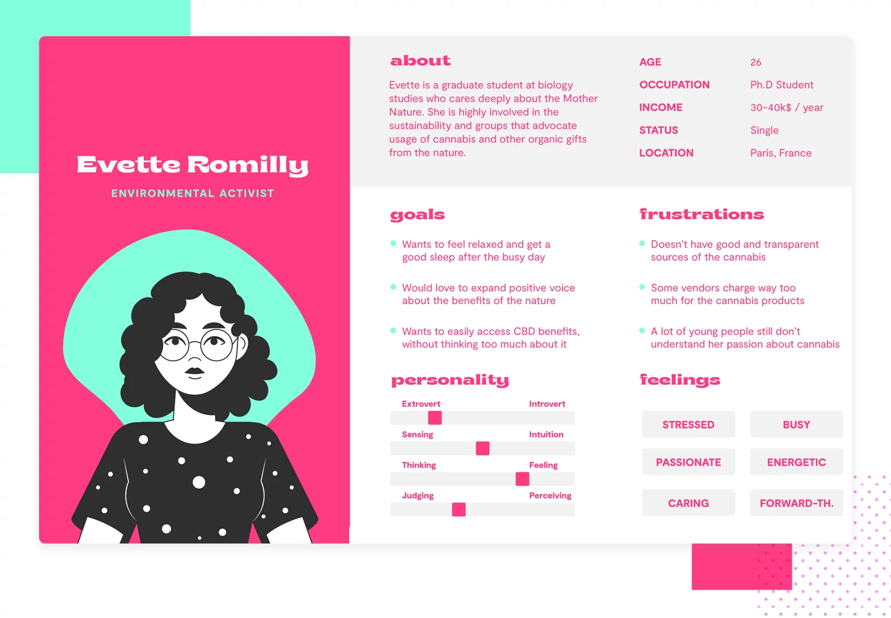

GUI (Graphical User Interface, deutsch: Grafische Benutzeroberfläche) ist eine visuelle Schnittstelle, die es Nutzern ermöglicht, mit einem Computer, einer Software oder einem Gerät zu interagieren – ohne textbasierte Eingaben wie in einer Kommandozeile (CLI).
Welche Rolle spielt das Layout für die Benutzerfreundlichkeit einer GUI?
Das Layout beeinflusst die Navigation, Effizienz und Verständlichkeit einer GUI. Es bestimmt wie einfach und intuitiv Nutzer mit der Oberfläche interagieren können.
Welche Tools kann man für GUI Design verwenden?
Einige der beliebtesten Tools sind:
→ Figma: Meistgenutzes Tool für kollavoratives Design, plattformunabhängig.
→ Sketch: Sehr beliebt bei macOS-Nutzern, besonders für App- und Web-Design
→ Adobe XD: Intuitives Tool für UI-Design, gut in Adobe-Ökosystem integriert
→ React & Material-UI → Web-Apps mit modernen UI-Komponenten
→ Flutter: Sehr beliebt für Mobile-GUI-Design (Android & iOS)
→ Qt (PyQt, C++ Qt): Häufig genutzt für Desktop-Anwendungen
→ Adobe Illustrator: Standard für Vektor-Grafiken & Icons
→ Whimsical: Alternative für schnelle UI-Konzepte mit einfacher Bedienung
Welche gängigen Layout-Prinzipien gibt es, um eine konsistente und benutzerfreundliche Oberfläche zu gestalten?
Visuelle Hierarchie: Wichtige Elemente müssen sofort ins Auge fallen.
Konsistenz & Wiedererkennbarkeit: Gleiche Elemente sollten sich gleich verhalten.
Responsives & Flexibles Design: GUI muss auf verschiedenen Bildschirmgrößen funktionieren.
Nutzerführung & Orientierung: Das Layout soll Nutzer intuitiv durch die Anwendung leiten.
Weißraum (Whitespace) & Lesbarkeit: Platz zwischen Elementen verbessert Übersicht & Fokus.
Feedback & Interaktivität: Nutzer sollten immer wissen, was passiert (Hover und Klick-Animationen, Ladeanzeigen, Fehlerhinweise...).
Barrierefreiheit (Accessibility): Alle Nutzer müssen die GUI bedienen können.
Grid-System
Was ist das 12er-Grid-System und warum wird es häufig im UI-Design verwendet?
Das 12er-Grid-System ist eines der am häufigsten verwendeten Layout-Systeme im UI-Design, weil es flexibel, skalierbar und intuitiv ist.
12 ist durch viele Zahlen teilbar (1, 2, 3, 4, 6, 12). Dadurch lassen sich verschiedene Layouts leicht anpassen:
1-Column-Layout -> (12) -> 1 column: each column takes up 12 of 12 units or 100% of the width.
2-Columns-Layout -> (6+6) -> 2 columns: each column takes up 6 of 12 units or 1/2 of the width.
3-Columns-Layout -> (4+4+4) -> 3 columns: each column takes up 4 of 12 units or 1/3 of the width.
4-Columns-Layout -> (3+3+3+3) -> 4 columns: each column takes up 3 of 12 units or 1/4 of the width.
6-Columns-Layout -> (2+2+2+2+2+2) -> 6 columns: each column takes up 2 of 12 units or 1/6 of the width.
12-Columns-Layout -> (1+1+1+1+1+1+1+1+1+1+1+1) -> 12 columns: each column takes up 1 of 12 units or 1/12 of the width.
Wie vermeidet man eine ungleichmäßige oder unstrukturierte Anordnung von Elementen im 12er-Grid?
Indem man spalten konsequent nutzt. Beispiel: Eine 3-Spalten-Aufteilung sollte 4-4-4 sein, nicht 5-3-4.
Somit erreicht man eine gleichmäßige Breite, die für eine harmonische, ausbalancierte und visuell ansprechende Struktur sorgt.
Eine klare visuelle Hierarchie zu beachten ist ebenso wichtig wie das gezielte Einsetzen von Whitespace.
Wie kann man das 12er-Grid flexibel für verschiedene Bildschirmgrößen einsetzen?
Das 12er-Grid kann durch responsives Design flexibel für verschiedene Bildschirmgrößen angepasst werden. Übliche Methoden sind Flexbox oder CSS Grid. Über Media Queries kann man das Design responsive machen.
Spacing & White Space
Warum ist ausreichend Abstand zwischen UI-Elementen wichtig?
Ausreichend Abstand zwischen UI-Elementen ist essenziell für eine gute Benutzererfahrung, weil er die Lesbarkeit, Interaktion und visuelle Klarheit verbessert.
Was ist White Space und warum ist es wichtig?
White Space (auch Negativraum genannt) ist der leere Raum zwischen UI-Elementen, Texten oder Grafiken in einem Layout. Es muss nicht unbedingt „weiß“ sein - es kann jede Hintergrundfarbe haben.
Ein gutes UI-Design nutzt gezielt leeren Raum, um Inhalte klar und ansprechend zu präsentieren. Vorteile:
- Verbessert die Lesbarkeit: Ausreichend Abstand zwischen Textzeilen erhöht die Lesbarkeit.
- Führt das Auge & schafft visuelle Hierarchie: Elemente mit mehr White Space wirken wichtiger und lenken die Aufmerksamkeit.
- Erhöht die Nutzerfreundlichkeit (UX): Buttons und Klickflächen mit genug Abstand sind leichter zu bedienen.
- Vermeidet kognitive Überlastung: Zu viele Informationen ohne Abstand überfordern den Nutzer.
- Sorgt für ein modernes & elegantes Design: Minimalistische Designs nutzen bewusst viel White Space, um edel zu wirken.
Gruppierung & Näheprinzip
Wie kann man zusammengehörige Inhalte visuell gruppieren?
Zusammengehörige Inhalte sollten so visuell organisiert werden, dass Nutzer sie intuitiv als Einheit wahrnehmen. Dabei helfen mehrere Methoden:
- Nähe-Prinzip: Elemente, die nah beieinander stehen, werden als zusammengehörig wahrgenommen.
- White Space gezielt einsetzen: Erzeugt eine natürliche Trennung, ohne zusätzliche Linien oder Boxen.
- Hintergrundfarben & Rahmen: Gleiche Hintergrundfarben für verwandte Inhalte schaffen visuelle Einheiten.
Rahmen oder Container halten Gruppen optisch zusammen.
- Visuelle Hierarchie: Gleiche Schriftarten und -größen für ähnliche Inhalte verwenden.
- Linien & Trennstriche einsetzen: Feine Linien oder Schatten helfen, Gruppen ohne große visuelle Unruhe zu trennen. Besonders nützlich in Tabellen, Menüs oder Formularen.
- Farb- & Kontrasteffekte nutzen: Verwandte Inhalte können durch ähnliche Farben hervorgehoben werden. Kontrast zwischen Gruppen macht die Struktur übersichtlicher.
Visuelle Balance & Gewichtung
Wie kann eine ausgeglichene Verteilung von Elementen in einem UI-Layout erreicht werden?
Je nach Layout kann man verschiedene Methoden verwenden:
- Das 12er-Grid-System & White Space für klare Struktur nutzen.
- Gleichmäßige Abstände & Margins definieren.
- Visuelle Gewichtung & Ausrichtung beachten -> Elemente sollten optisch ausbalanciert wirken. Bilder dürfen nicht zu stark dominieren – sie sollten das Thema unterstützen.
Buttons sollten sich durch Farbe & Größe klar vom Text abheben.
Welche Faktoren beeinflussen die visuelle Hierarchie in einem UI?
Visuelle Führung: Bezeichnet die gezielte Lenkung des Blicks der Nutzer durch eine Webseite, sodass sie Inhalte intuitiv erfassen und gewünschte Aktionen ausführen können. Methoden der visuellen Führung sind:
- Blickmuster & Layout-Strategien helfen, Weblayouts an das natürliche Leseverhalten der Nutzer anzupassen.
- Visuelle Hierarchie durch Größe, Farbe und Typografie sorgt für eine klare Struktur.
- Design-Elemente wie Pfeile, Bilder und Buttons lenken den Blick gezielt.
- Weißraum und Abstände vermeiden Überladung und verbessern die Lesbarkeit.
Visuelle Strukturierung: Sorgt für eine klare und geordnete Darstellung von Inhalten auf einer Webseite. Sie verbessert die Lesbarkeit, Orientierung und Nutzerführung, indem sie Informationen logisch gliedert.
- Größe & Gewichtung: Wichtige Inhalte größer oder fetter darstellen.
- Farben & Kontraste: Heben Elemente hervor und schaffen klare Unterscheidungen.
- Typografie-Struktur: H1 → H2 → H3 für logische Informationsabfolge.
- „Above the Fold“ - Prinzip: Der Begriff bezeichnet den Bereich einer Webseite, der ohne Scrollen sofort sichtbar ist. Nutzer entscheiden oft in Sekunden, ob sie auf der Seite bleiben oder abspringen.
Die wichtigsten Informationen und Call-to-Actions sollten sofort sichtbar sein.
Wie kann man wichtige Elemente stärker hervorheben, ohne das Layout zu überladen?
Die wichtigste Methoden sind:
- Farbkontraste gezielt einsetzen.
- Weißraum (Negative Space) sinnvoll nutzen.
- Größe & Typografie: Durch größere Schriftgrößen, fetter oder kursiver Schrift.
- Klarheit durch Icons & Symbole erschaffen.
- Sanfte Animationen können Elemente hervorheben, ohne den Nutzer zu überfordern.
Scanning & Nutzerführung
Wie verläuft die natürliche Blickführung der Nutzer auf einer Webseite oder App?
Sie folgt in der Regel bestimmten, intuitiv erkennbaren Mustern, die stark von Leserichtung, visueller Hierarchie und designtechnischen Elementen abhängen. Hier sind die wichtigsten Aspekte des natürlichen Blickverlaufs:
- Scanning-Muster: Diese Muster basieren auf der Art und Weise, wie Menschen Inhalte auf Webseiten scannen.
F-Muster: Nutzer tendieren dazu, Webseiten in einer F-Form zu scannen, besonders bei textlastigen Seiten -> Der Blick beginnt oben links und folgt einer horizontalen Linie, bevor er nach unten zu einer weiteren horizontalen Linie springt.
Z-Muster: Auf Seiten mit wenigen Inhalten (z. B. Werbeanzeigen) folgt der Blick häufig einem Z-Muster: Von links oben nach rechts, dann eine Diagonale und erneut von links nach rechts. Diese Struktur lenkt die Aufmerksamkeit schnell auf spezifische, oft visuell betonte Elemente.
- Lesereihenfolge: Texte werden meist von oben nach unten und von links nach rechts gelesen (in westlichen Kulturen).
Wichtige Inhalte oder Call-to-Actions (CTAs) sollten daher immer oben oder im zentralen Bereich positioniert werden.
- Visuelle Hierarchie: Größere, auffälligere oder kontrastierende Elemente werden zuerst wahrgenommen. Dazu gehören z. B. große Überschriften oder auffällige Buttons.
- Blick auf das Zentrum: Der Blick des Nutzers springt zuerst in den zentralen Bereich einer Seite, wobei der Bereich „Above the Fold“ (im sichtbaren Bereich ohne Scrollen) besonders wichtig ist.
- Visuelle Führer: Der Blick folgt oft der Blickrichtung von Menschen in Bildern oder Grafiken, was dazu genutzt werden kann, Nutzer visuell zu bestimmten Bereichen zu lenken.
Auch Symbole & Icons schaffen Orientierung und lenken die Aufmerksamkeit auf spezifische Funktionen oder wichtige Bereiche.
- Interaktive Elemente: Animationen oder Hover-Effekte ziehen ebenfalls die Aufmerksamkeit auf sich, da der Blick sich oft zu bewegten oder interaktiven Elementen hinzieht.
Aufgabe 4: UX/UI Design - Typografie und Schriften
Moodboard
Was ist ein Moodboard?
Ein Moodboard ist eine Collage aus Bildern, Farben, Schriftarten und anderen visuellen Elementen, die eine bestimmte Stimmung, Ästhetik oder Konzept vermitteln soll.
Wofür verwendet man ein Moodboard?
Es wird häufig in Design, Mode, Innenarchitektur, Werbung und anderen kreativen Bereichen genutzt, um Ideen zu sammeln und eine visuelle Richtung für ein Projekt festzulegen.
Wie wird ein Moodboard erstellt?
1. Thema und Ziel festlegen (Stimmung oder Konzept definieren, der vermittelt werden soll)
2. Inspirationsquellen sammeln (Suche nach Bildern, Farben, Schriftarten, Icons...). Besonders praktisch sind Apps wie Pinterest.
3. Farbplatte bestimmen
4. Die gesammelten Elemente arrangieren, so dass sie zusammen eine klare und harmonische visuelle Aussage bilden.
5. Präsentation verfeinern (Anordnung optimieren, damit das Moodboard klar und Übersichtlich wird). Dazu helfen besonders Anmerkungen und Stichworte.
Welche Tools kann ich zur Erstellung eines Moodboards verwenden?
Einige der gängigsten Tools sind:
Color Hunt: Bietet eine Sammlung von Farbpaletten, die für Designprojekte verwendet werden können. Sehr Benutzerfreundlich.
Pinterest: Soziale Plattform, die ähnlich wie eine digitale Pinnwand funktioniert, und besteht hauptsächlich aus Bilder, Links und Artikeln.
Die Hauptfunktion ist Lieblingsideen und Inspirationen zu sammeln.
Canva: Bietet Vorlagen für Moodboards und auch die Möglichkeitm einige Designs zu erstellen.
Andere Tools wie: Miro, Figma, Mural, u.a.
Typografie
Was sind die wichtigsten Prinzipien der Typografie im Webdesign?
- Lesbarkeit & Klarheit: Zu kleine Schriftgrößen vermeiden. Genügend Zeilhöhe für bessere Lesbarkeit.
- Responsive Typographie: Schriftgrößen und Abstände sollten sich an verschiedene Bildschirmgrößen anpassen.
- Konsistenz & Branding: Schriftarten und Stile sollten im gesamten Webdesign einheitlich sein.
Wie beeinflussen Schriftarten die Lesbarkeit und Nutzererfahrung auf einer Website?
Die Wahl der Schriftart hat einen riesigen Einfluss auf die Lesbarkeit (UI) und die Nutzererfahrung (UX) einer Website.
Sie bestimmt, wie leicht und angenehm Besucher die Inhalte erfassen können — und wie lange sie gerne bleiben. Sie beeinflüsst auch die Emotion des Users und die usability der Website.
Was sind Serif- und Sans-Serif-Schriften?
Es sind zwei der wichtigsten Schriftkategorien im design und Webdesign. Sie unterscheiden sich durch das Vorhandensein oder Fehlen von Verzierungen (ornaments), die sogenannten Serifen.
Visuelles Beispiel:


Wann sollte man sie verwenden?
Serif: In Formelle, traditionelle oder elegante Designs. Auch für längere gedruckte Texte geeignet. Sie können in Überschriften eine gewisse Würdigkeit verleihen.
Beispiele: Times New Roman / Georgia / Garamond
Nicht ideal für digitale Texte bei kleinen Scriftgrößen.
Sans-Serif: Sehr geeignet für Webdesign & Digitale Medien, besonders leserlich auf Bildschirmen und in kleinen Schriftgrößen.
Beispiele: Arial / Helvetica / Open Sans
Oft verwendet in Moderne, minimalistische Designs, und auch für interaktive Elemente.
Was sind die entscheidende Faktoren für eine gute Lesbarkeit?
Schriftart: Klare und gut lesbare Schriftarten verwenden.
Schriftgröße: 14-16px ist eine häufig empfohlene Schriftgröße für Fließtext in Webdesigns.
Zeilenhöhe (Line-Height): Der Text soll nicht zu dicht wirken. Eine Zeilenhöhe von ca. 1.4 bis 1.6-mal ist meistens empfohlen.
Buchstabenabstand (Letter-Spacing): Auf Bildschirmen (Websites, Apps) ist es besonders wichtig, den richtigen Abstand zu wählen, damit der Text klar und schnell lesbar bleibt.
Wenn die Buchstaben zu nahe beieinander stehen oder zu weit auseinander, kann der Text schwer zu lesen sein. Jedoch kann dies für Überschriften und Design-Elemente eine interessante, ästhetische Wirkung haben.
Warum ist eine Hierarchie in der Typografie wichtig, und wie kann sie effektiv umgesetzt werden?
Eine klare Hierarchie in der Typografie sorgt dafür, dass der Text für den Leser leicht zugänglich und verständlich ist.
Sie ermöglicht es, Informationen effizient zu organisieren und die visuelle Aufmerksamkeit auf die wichtigsten Elemente zu lenken.
-> Beispiel einer typografischen Hierarchie:
<h1>:Hauptüberschrift.
<h2>:Sektionen des Textes.
<h3>:Unterüberschriften der Sektionen.
Fließtext:Der normale text, detaillierte Information enthält.
Fettdruck:Wichtige Wörter oder Hinweise.
Kursivschrift:Zitate oder Betonung.
Wie können Webdesigner sicherstellen, dass ihre Typografie den WCAG-Richtlinien für Barrierefreiheit entspricht?
Die WCAG geben spezifische Empfehlungen, wie Webinhalte gestaltet werden sollten, damit sie für eine breite Nutzergruppe zugänglich sind, einschließlich Menschen mit Sehbehinderungen oder anderen Einschränkungen.
Richtlinien:
Der Kontrast zwischen Text und Hintergrund muss ausreichend hoch sein, um sicherzustellen, dass der Text für alle Benutzer, insbesondere für Menschen mit Sehbehinderungen oder Farbsehstörungen, gut lesbar ist.
Der Text muss in einer größeren Schriftgröße vorliegen und sich gut skalieren lassen, damit er für alle Benutzer leicht zu lesen ist.
Text sollte nicht in Bildern eingebettet werden, da er für Bildschirmleser und bei Vergrößerung unzugänglich wird.
Schriftarten verwenden, die für alle Benutzer gut lesbar sind. Einige Schriftarten können bei bestimmten Benutzern, wie denen mit Legasthenie oder Sehbehinderungen, schwer zu lesen sein.
Sicherstellen, dass der Text auch für Nutzer zugänglich ist, die ausschließlich mit der Tastatur navigieren, einschließlich der Möglichkeit, den Text zu vergrößern und zu scannen.
Vermeiden von Übermäßigem Text oder Texten, die schwierig zu entziffern sind.
Der Text sollte klar und einheitlich sein, ohne unnötig verzierte Schriftarten, die für Menschen mit Sehbehinderungen oder Legasthenie schwer lesbar sind.
Farbqualität
Was sind die Prinzipien der Farbharmonie?
Farbharmonie bezieht sich auf die ausgewogene und angenehme Verwendung von Farben, die zusammen ein ästhetisch ansprechendes Gesamtbild erzeugen.
Die Grundprinzipen sind:
Farbkreis und Farbtheorie: Der Farbkreis ist ein hilfreiches Werkzeug, um harmonische Farbkombinationen zu entwickeln. Er zeigt die Beziehung zwischen Primär-, Sekundär- und Tertiärfarben und hilft zu verstehen, welche Farben gut miteinander funktionieren.
Komplementärfarben: Es sind Farben, die sich auf dem Farbkreis gegenüberliegen. Beispiele sind Rot und Grün / Blau und Orange / Gelb und Violett.
Analogous Colors (Nebenfarben): Es sind Farben, die auf dem Farbkreis nebeneinander liegen. Sie harmonieren gut miteinander und erzeugen ein sanftes, berühigendes Gefühl. Beispiel: Blau / Blaugrün / Grün.
Triadische Farben:Es sind Farben, die gleichmäßig auf dem Farbkreis verteilt sind und ein gleichmäßiges Gleichgewicht zwischen ihnen bieten. Beispiel: Rot, Blau, Gelb.
Graphisches Beispiel:
Welche psychologische Wirkung haben warme und kühle Farben im Webdesign?
Warme Farben vermitteln ein Gefühl von Energie, Wärme und Bewegung. Sie ziehen die Aufmerksamkeit auf sich und können aktive Reaktionen hervorrufen. Sie werden oft mit Freude, Leidenschaft, Begeisterung und Wärme in Verbindung gebracht.
Kühle Farben haben eine beruhigende, entspannende und oft professionelle Wirkung. Sie fördern Ruhe, Stabilität und Vertrauen. Diese Farben werden oft mit Klarheit, Vertrauen, Gelassenheit und Harmonie in Verbindung gebracht.
Wie beeinflussen verschiedene Farben die Emotionen und das Verhalten der Nutzer auf einer Website?
Farben wecken unbewusste Assoziationen und können das Erlebnis und die Interaktion auf einer Website maßgeblich beeinflussen. Sie können das Gefühl von Vertrauen, Dringlichkeit, Freundlichkeit oder sogar Ruhe erzeugen. Auf diese Weise können Farben das Verhalten der Nutzer lenken, wie z. B. das Klicken auf einen Button, das Verweilen auf der Seite oder das Verlassen der Seite.
Zudem sollte die Farbwahl immer in Bezug auf die Zielgruppe erfolgen. Junge, dynamische Marken können kräftige, lebendige Farben verwenden, während seriöse Unternehmen auf gedämpfte, professionelle Farbtöne setzen sollten.
Wie beeinflusst der Kontrast die Lesbarkeit und Barrierefreiheit von Webseiten?
Ein ausreichender Kontrast sorgt dafür, dass Text für alle Benutzer, einschließlich Menschen mit Sehbehinderungen, gut lesbar ist. Wenn der Kontrast nicht ausreicht, kann dies die Nutzererfahrung erheblich beeinträchtigen und den Zugang zu wichtigen Informationen erschweren.
Deswegen muss bei der Farbwahl darauf geachtet werden, dass die Seite auch für Menschen mit Sehbehinderungen wie Farbenblindheit zugänglich ist. Etwa 8% der Männer und 0,5% der Frauen weltweit leiden an Farbfehlsichtigkeit.
Best Practices:
Vermeidung von sehr niedrigen Kontrastwerten wie z. B. grauem Text auf weißem Hintergrund, da dies für viele Benutzer, insbesondere für ältere Nutzer oder Menschen mit Sehschwäche, schwer zu lesen ist.
Bei der Verwendung von Hintergrundbildern sollte der Kontrast zwischen Text und Bild ausreichend hoch sein. Eventuell kann ein semi-transparentes Overlay helfen, den Text vom Hintergrund abzuheben.
Bei der Farbwahl zu beachten: Helle Hintergründe mit dunklem Text sind allgemein leichter lesbar, während dunkle Hintergründe mit helle Schrift eleganter wirken, aber auch eine gewisse Vorsicht hinsichtlich der Augenbelastung erfordern können.
Vermeiden, Informationen nur mit Farben zu vermitteln. Alternative visuelle Hinweise wie Symbole oder Unterstreichungen berücksichtigen.
Wie beeinflussen der Dark Mode und der Light Mode das Webdesign?
Der Light Mode und der Dark Mode haben signifikante Auswirkungen auf das Webdesign, da sie die Art und Weise beeinflussen, wie Inhalte wahrgenommen werden und wie komfortabel Nutzer mit einer Website interagieren.
Light Mode: Viele Nutzer bevorzugen den Light Mode tagsüber, da er den Text klarer und lebendiger erscheinen lässt, besonders bei direkter Sonneneinstrahlung. Der helle Hintergrund mit dunklem Text sorgt für einen klassischen Look und ist besonders gut bei Tageslicht oder in gut beleuchteten Umgebungen geeignet. Der Kontrast ist oft hoher, was die Lesbarkeit unterstützt, aber in schwächer beleuchteten Umgebungen kann der starke Helligkeitsunterschied anstrengend für die Augen sein.
Dark Mode: Ein dunkler Hintergrund mit hellem Text ist für den Einsatz in schwach beleuchteten Umgebungen konzipiert und verringert die Belastung der Augen. Allerdings kann der Kontrast in diesem Modus zu gering sein, wenn die Farben nicht richtig abgestimmt sind, was die Lesbarkeit beeinträchtigen kann.
Wie sollten Farben für beide Modi angepasst werden, um eine optimale Benutzererfahrung zu gewährleisten?
Light Mode: Für den Light Mode sollten helle Hintergrundfarben wie Weiß oder Hellgrau verwendet werden, um eine saubere, klare Oberfläche zu bieten. Der Text wird in der Regel in dunklen Farben wie Schwarz oder Dunkelgrau gehalten, um einen hohen Kontrast zu schaffen und die Lesbarkeit zu fördern.
Für den Dark Mode sind dunklere Hintergründe wie Dunkelgrau oder Schwarz erforderlich, um die Augen zu entlasten und eine gute Lesbarkeit bei hellen Schriftarten zu gewährleisten. Für den Text im Dark Mode wird eine helle Farbe wie Weiß oder Hellgrau verwendet, um den Text auf dem dunklen Hintergrund gut lesbar zu machen.
Anwendung von Farben
Welche bewährten Methoden gibt es, um Farben gezielt zur Steuerung der Nutzeraufmerksamkeit einzusetzen?
Kontraste nutzen: Um Aufmerksamkeit zu erregen, oder bestimmte Elemente hervorzuheben.
Primärfarbe für wichtige Elemente: Rot, Blau, Gelb sind oft auffällig und werden genutzt, um wichtige Aktionen oder Warnhinweise hervorzuheben.
Farbpsychologie einsetzen: Jede Farbe hat eine bestimmte psychologische Wirkung, die du gezielt nutzen kannst, um Emotionen zu wecken oder Verhalten zu beeinflussen.
Farbhierarchie: Bewusst einsetzen, um die Wichtigkeit von Inhalten zu vermitteln. Beispiel: Kräftigere oder lebendigere Farben für wichtigere oder priorisierte Elemente und dezente Farben für weniger wichtige Details.
Markenidentität: Farben wählen, die zu den Markenwerten passen um Konsistenz zu gewährleisten und die Markenwahrnehmung zu stärken.
Wie können Webdesigner Farben nutzen, um eine starke Markenidentität und Vertrauen zu schaffen?
Die Farbe sollte die Persönlichkeit der Marke widerspiegeln und dem Nutzer helfen, das Unternehmen oder Produkt visuell zu erkennen.
Die Farben sollen mit der Markenbotschaft übereinstimmen. Beispiele dafür sind:
Coca-Cola: Rot und Weiß. Rot symbolisiert Energie, Leidenschaft und Freude, während das Weiß für Klarheit und Frische steht.
Apple: Silber, Weiß und Schwarz. Apple nutzt eine minimalistische Farbpalette aus neutralen Tönen, um Eleganz, Innovation und Luxus zu vermitteln.
Nike: Schwarz, Weiß und Orange. Die Kombination aus schwarz und weiß stellt eine zeitlose, elegante und moderne Markenidentität dar, während das Orange als Akzentfarbe Energie und Dynamik ausstrahlt.
Spotify: Grün und Schwarz. Grün steht für Erfrischung, Energie und Wachstum und spiegelt die Musikvielfalt wider, die Spotify bietet. Der schwarze Hintergrund sorgt für eine stilvolle und konzentrierte Benutzeroberfläche.
Technische Aspekte
Was sind Systemschriften, Web-Safe Fonts und Web Fonts?
Systemschriften: Schriftarten, die bereits auf den meisten Computern oder Geräten vorinstalliert sind. Sie sind also auf allen Betriebssystemen verfügbar (Windows, macOS, Linux usw.) und müssen nicht zusätzlich heruntergeladen werden.
Web-Safe Fonts: Web-Safe Fonts sind Schriften, die auf den meisten Computern und Geräten vorinstalliert sind und eine höhere Wahrscheinlichkeit haben, dass sie auf verschiedenen Plattformen korrekt angezeigt werden. Web-Safe Fonts sind eine Untergruppe der Systemschriften.
Web Fonts: Web Fonts sind Schriftarten, die speziell für den Webgebrauch entwickelt wurden und über das Internet geladen werden, wenn die Webseite aufgerufen wird. Diese Schriftarten sind nicht notwendigerweise auf den Geräten des Nutzers vorinstalliert, sondern werden über externe Dienste wie Google Fonts oder Adobe Fonts bereitgestellt.
Zusammenfassung der Unterschiede:
Kriterium
Systemschriften
Web-Safe Fonts
Web Fonts
Verfügbarkeit
Auf den meisten Systemen vorinstalliert
Auf den meisten Systemen vorinstalliert
Muss über das Web geladen werden (extern)
Beispiel
Arial, Times New Roman, Courier New
Arial, Verdana, Georgia, Tahoma
Google Fonts (Roboto, Open Sans), Adobe Fonts (Proxima Nova)
Designfreiheit
Eingeschränkt
Eingeschränkt
Sehr hoch, viele Optionen verfügbar
Ladezeiten
Sehr schnell (keine externen Ressourcen)
Schnell (keine externen Ressourcen)
Langsame Ladezeiten, da Schriftarten extern geladen werden
Kompatibilität
Sehr hoch (auf den meisten Systemen vorhanden)
Sehr hoch (auf den meisten Systemen vorhanden)
Kann auf verschiedenen Geräten und Browsern konsistent angezeigt werden
Vorteile
Hohe Kompatibilität, schnelle Ladezeiten
Hohe Kompatibilität, schnelle Ladezeiten
Viel Auswahl an Schriften, Konsistenz, Markenindividualität
Nachteile
Eingeschränkte Auswahl
Eingeschränkte Auswahl
Längere Ladezeiten, benötigt Internetzugang
Wie funktionieren Schriftformate wie TTF, OTF, WOFF und WOFF2, und welche sind am besten für das Web geeignet?
Schriftformate wie TTF, OTF, WOFF und WOFF2 sind verschiedene Dateiformate für digitale Schriftarten, die je nach Einsatzgebiet unterschiedliche Eigenschaften haben:
Format
Bedeutung
Eigenschaften
Einsatzbereich
TTF
TrueType Font
Gute Qualität, große Dateigröße
Desktop-Programme, ältere Betriebssysteme
OTF
OpenType Font
Besserer Schriftsatz, Ligaturen
Professionelles Print-Design, Desktop
WOFF
Web Open Font Format
Kleine Dateigröße, unterstützt Metadaten
Webdesign, empfohlen für Browser
WOFF2
Web Open Font Format 2
Noch kleinere Dateigröße, schnellere Ladezeiten
Bestes Format für moderne Websites
Für das Web sind WOFF (Web Open Font Format) und WOFF2 am besten geeignet. Vorteile:
- Sie sind komprimiert -> Schnellere Ladezeiten.
- Optimiert für das Web -> Entwickelt speziell für Browser.
- Kompatibilität -> Unterstützt von allen modernen Browsern.
- WOFF2 ist noch effizienter -> 30% kleinere Dateigröße als WOFF.
Welche Vor- und Nachteile haben Google Fonts und selbst gehostete Schriftarten?
- Google Fonts: Ideal für schnelle und einfache Implementierung, aber mit Datenschutzrisiken.
- Selbst gehostete Fonts: Besser für DSGVO-konforme Seiten (Datenschutz-Grundverordnung, ist eine EU-weite Verordnung) & mehr Kontrolle, aber mit mehr Aufwand.
- Deswegen ist es empfehlenswert, Google Fonts auch lokal zu hosten -> Datenschutzfreundlich & keine externe Datenübertragung.
Was sind Display-Technologien (OLED, LCD) und wie beeinflussen sie die Farbdarstellung im Web?
Display-Technologien sind verschiedene Methoden, um Bilder und Farben auf Bildschirmen anzuzeigen. Sie bestimmen, wie ein Bildschirm Licht und Farben erzeugt, damit wir Inhalte auf Geräten wie Fernsehern, Monitoren oder Smartphones sehen können.
• LCD nutzt Flüssigkristalle und eine Hintergrundbeleuchtung → gleichmäßige, aber manchmal weniger lebendige Farben.
LCDs (besonders IPS) bieten eine stabile, farbtreue Darstellung und sind gut für Webdesign geeignet.
• OLED erzeugt Licht pixelweise → intensivere Farben, höherer Kontrast, aber anfälliger für Einbrennen.
Was sind Farbräume (sRGB, AdobeRGB) und wie beeinflussen sie die Farbdarstellung im Web?
Ein Farbraum ist ein festgelegter Bereich von Farben, den ein Gerät wie ein Monitor oder eine Kamera darstellen oder erfassen kann. Farbräume helfen dabei, Farben auf verschiedenen Geräten möglichst gleich darzustellen.
Die wichtigsten Farbräume im Web sind sRGB und AdobeRGB.
• sRGB (Standard RGB): Standard-Farbraum für das Web und die meisten digitalen Geräte. Entwickelt für eine gleichmäßige Darstellung auf verschiedenen Bildschirmen.
Wird von fast allen Monitoren, Smartphones und Browsern unterstützt.
• AdobeRGB: Hat im Vergleich zu sRGB einen erweiterten Farbumfang, besonders bei Grün- und Blautönen. Entwickelt für professionelle Fotografie und Druck.
Nicht alle Monitore unterstützen AdobeRGB, was zu Farbabweichungen führt.
Welche Herausforderungen gibt es bei der Konsistenz von Farben auf verschiedenen Geräten und Browsern?
Die Farbdarstellung kann je nach Gerät, Display-Technologie, Farbraum und Software variieren. Das führt dazu, dass Farben nicht überall gleich aussehen.
Beispiele:
- Eine Farbe kann auf OLED leuchtend, auf einem günstigen LCD dagegen matt erscheinen.
- Eine Farbe, die für sRGB optimiert wurde, kann auf einem AdobeRGB-Monitor zu blass oder zu kräftig wirken.
- Windows, macOS, iOS und Android verwenden unterschiedliche Farbmanagement-Systeme.
- Einige Browser (z. B. Chrome, Firefox, Safari) unterstützen erweiterte Farbräume wie Display P3, andere nicht.
Wie funktioniert das Farbmanagement in CSS?
CSS verwendet standardmäßig den sRGB-Farbraum für die Farbdarstellung.
Welche Formate zur Farbdarstellung kann man in CSS verwenden?
Hexadezimale Farben (HEX): Ein sechsstelliges Format, das Farben durch die Angabe der RGB-Werte im Hexadezimalsystem darstellt.
Beispiel -> color: #ff5733; -> Rot-Orange
RGB (Rot, Grün, Blau): Werte für Rot, Grün und Blau im Bereich von 0 bis 255.
Beispiel -> rgb(255, 87, 51); -> Rot-Orange
HSL (Hue, Saturation, Lightness): Farbton (H) in Grad (0 bis 360), Sättigung (S) und Helligkeit (L) in Prozent (0% bis 100%)..
Beispiel -> color: hsl(12, 100%, 60%); -> Rot-Orange
LAB (Lightness, Green-Red-Axis, Blue-Yellow-Axis): Lightness Gibt die Helligkeit der Farbe an, von 0% (schwarz) bis 100% (weiß).
Grün-Rot-Achse beschreibt die Position der Farbe auf einer Achse zwischen Grün und Rot. Negative Werte liegen im grünen Bereich, positive Werte im roten Bereich.
Blau-Gelb-Achse beschreibt die Position der Farbe auf einer Achse zwischen Blau und Gelb. Negative Werte liegen im blauen Bereich, positive Werte im gelben Bereich. Die 3 Werte sind nur mit Leerzeichen getrennt.
Eine Persona im UI/UX-Design ist eine fiktive, repräsentative Figur, die auf realen Benutzerforschungsergebnissen basiert und dazu dient, die Zielgruppen und deren Bedürfnisse, Ziele und Verhaltensweisen zu verstehen.
Woher stammt das Wort?
Ursprünglich aus dem Lateinischen und bedeutet “Maske” oder “Rolle”. Im modernen Kontext, insbesondere im Psychologie- und Soziologie-Bereich, bezeichnet “Persona” das öffentliche Selbst oder die Fassade, die jemand gegenüber anderen zeigt.
Wie kann ich eine Persona erstellen?
Durch Benutzerforschung, wie Umfragen, Interviews, Beobachtungen und Datenanalyse.
Wie sieht ein Persona-Profil aus?
Template Beispiel:

Nutzen
Wozu brauchen wir eine Persona?
Personas werden erstellt, um Designentscheidungen besser auf die tatsächlichen Bedürfnisse der Benutzer auszurichten und sicherzustellen, dass das Endprodukt für die Benutzer intuitiv und effektiv ist.
Wie können wir als Software Entwickler eine Persona nutzen?
Als Werkzeug, um Benutzerbedürfnisse klar zu definieren und das Design eines Produkts auf die tatsächlichen Nutzererfahrungen und -erwartungen abzustimmen.
Prozess der Erstellung
Welche Schritte brauche ich, um eine Persona zu erstellen?
1. Benutzerforschung durchführen.
2. Daten Analyse / Muster Erkennung
3. Kategorisierung der Benutzer.
4. Erstellung der Persona.
Wie dokumentiere ich eine Persona?
Die Dokumentation einer Persona benötigt eine strukturierte Herangehensweise, die auf fundierten Benutzerforschungsdaten basiert. Die relevanteste Informationen sind:
1. Name und Foto
2. Demografische Informationen (Alter, Beruf, Bildungsniveau, Standort)
3. Ziele und Motivationen (Hauptziele, Primäre Bedürfnisse)
4. Herausforderungen und Schmerzpunkte (Pain Points)
5. Verhaltensweisen (Wie nutzt die Persona Technologien, wleche Geräte oder Plattformen bevorzugt, usw...)
6. Zitat (Widerspiegelt die Haltung, Fokus oder Perspektive der Persona auf das Produkt)
Qualitätsmerkmale
Was sind die Merkmale von schwachen/ungeigneten Personas?
Fehlende Details / Unklare Ziele, Bedürfnisse oder Herausforderungen / Unrealistische Merkmale / keine klare Verhaltensweisen/
Was sind die Merkmale von gute Personas?
Sie liefern praktische und konkrete Informationen, die direkt in den Designprozess integriert werden können. Sie müssen helfen, Design-Probleme fragen zu beantworten, wie zum Beispiel:
- Wie können wir eine Funktion so gestalten, dass sie für die Persona intuitiv und einfach zu nutzen ist?
- Welche Probleme hat die Persona bei der Navigation auf der Webseite, und wie können wir das verbessern?
- Welche Funktionen fehlen der Persona, und wie können wir sie in das Design integrieren?
Welche Schritte muss ich in Visual Studio Code machen, um Git zu erstellen?
1. Git herunterladen und installieren.
2. In VS Code, überprüfen ob Git korrekt installiert wurde. Im Terminal eingeben: git --version
3. Git im VS Code aktivieren. Code -> Settings... -> Settings -> Search bar -> Git: Enable
4. Git-Benutzer konfigurieren -> Terminal öffnen und folgendes eingeben:
git config --global user.name "Dein Name"
git config --global user.email "deine@email.com"
5. Entweder neues Git-Repository erstellen oder vorhandenes Git-Repository klonen. Das kann in VS Code mit dem Source Control erreicht werden (Initialize Repository / Clone Repository). Alternativ kann man auch Befehle verwenden.
Welche Befehle muss ich im VS Code Terminal verwenden?
1. Existierendes Projekt wählen: cd/pfad/zum/projekt
oder neues Projekt erstellen: mkdir mein-projekt -> cd mein-projekt
2. Git initialisieren: git init -> Damit wird ein neues Git-Repository im aktuellen Ordner erstellt.
Was ist der Unterschied zwischen Befehle im Terminal oder Schritte in Visual Studio Code?
Git Dateistatus in Reihenfolge:
1. Untracked: Daten, die Git noch nicht verfolgt. Die Daten sind neu hinzugefügt, aber nicht zum Staging-Bereich hinzugefügt.
2. Modified (Unstaged): Dateien, die nach dem letzten Commit geändert wurden, aber noch nicht zum Staging-Bereich hinzugefügt wurden.
3. Staged (Ready for commit): Dateien, die zum Staging-Bereich hinzugefügt wurden und bereit für den Commit sind.
4. Committed: Dateien, die in einem Commit gespeichert wurden und Teil der Git-Historie sind.
Commit ist nur in dem lokalen Repository vorhanden, nicht auf einem Remote-Repository (wie GitHub oder GitLab).
Um Änderungen hochzuladen, muss man den Befehl git push verwenden, um die lokal vorgenommenen Commits auf ein Remote-Repository hochzuladen.
Wann kann ein Merge automatisch stattfinden?
Wenn keine Konflikte zwischen den Änderungen in den verschiedenen Branches auftreten, die zusammengeführt werden sollen.
Wann gibt es Merge-Konflikte?
Ein Merge kann nicht automatisch stattfinden, wenn:
Zwei Branches dieselbe Datei an der gleichen Stelle geändert haben.
Änderungen in den Branches so stark widersprüchlich sind, dass Git nicht entscheiden kann, wie sie kombiniert werden sollen.
In diesem Fall muss man den Merge manuell durchführen und die Konflikte auflösen, bevor der Merge abgeschlossen werden kann.
Wie kann man einen Merge durchführen, wenn Konflikte auftreten?
1. Merge ausführen mit Command: git merge <branch>
2. Bei Konflikten überprüfen, welche Dateien betroffen sind. Command: git status
3. Dateien öffnen und Konflikte beheben.
4. Konflikte als gelöst markieren mit Command: git add <dateiname>
5. Commit ausführen: git commit.
GIT CLI Befehle
git init
Initialisiert ein neues Git-Repository im aktuellen Verzeichnis.
git status
Zeigt den aktuellen Status des Arbeitsverzeichnisses.
git add <dateiname>
Fügt eine bestimmte Datei zum Staging-Bereich hinzu (vor dem Commit). Beispiel: git add index.html
git add .
Fügt alle geänderten und neuen Dateien zum Staging-Bereich hinzu.
git commit -m "<nachricht>"
Macht einen Commit der gestagten Änderungen und fügt eine Nachricht hinzu. Beispiel: git commit -m "Fixed bug in h1"
git push <remote> <branch>
Überträgt die Commits von deinem lokalen Branch zum Remote-Repository (hochladen). Beispiel: git push origin main
git pull <remote> <branch>
Holt die neuesten Änderungen aus dem Remote-Repository und führt einen Merge durch. Beispiel: git pull origin main
git clone <url>
Klont ein Remote-Repository und erstellt eine lokale Kopie. Beispiel: git clone https://github.com/username/repository.git
Montag, 17. Februar 2025
Aufgabe 2: Kurzer Ausflug - GIT
Definition und Begriffe
Was ist eine VCS (Version Control System)
Werkzeug, das ermöglicht, Änderungen am Quellcode eines Projekts zu verwalten.
Es verfolgt jede Änderung am Code, speichert diese und kann ältere Versionen wiederherstellen.
Es ist besonders nützlich in Projekten, an denen mehrere Personen mitbeteiligt sind.
Vorteile: Vereinfacht Zusammenarbeit. Heutzutage wird es häufigsten Git verwendet.
Was ist Git?
Es ist ein Version Control System, der 2005 von Linus Torvalds entwickelt wurde. Wir zur verwaltung von Quellcode verwendet.
Merkmale:
Es ist Dezentral, jeder hat eine vollständige Kopie.
Es ist schnell und effizient, arbeiten ist auch offline möglich.
Git ermöglicht das Erstellen von Branches, um neue Features oder Bugfixes zu entwickeln, ohne den Hauptcode zu beeinflussen.
Git gilt als Standard für Versionskontrolle in der Softwareentwicklung und wird von Platformen wie GitHub und GitLab unterstützt.
Was ist ein Git Commit?
Es ist eine Momentaufnahme des aktuellen Stands eines Projekts. Der Zustand der Dateien wird dauerhaft gespeichert in dem Git-Repository.
Die Änderungen werden zur Versionsgeschichte hinzugefügt. So können bei Bedarf auch ältere Versionen wiederhergestellt werden.
Was ist ein Git Repository?
Speicherort, in dem der komplette Quellcode eines Projekts mit der gesamten Versionshistorie gespeichert wird.
Was ist der Unterschied zwischen lokal und remote Repository?
Ein lokales Repository befindet sich auf dem Computer eines Entwicklers. Ermöglicht arbeit ohne Internetverbindung.
Ein remotes Repository wird auf einem Server oder Plattform wie GitHub gehostet. Erlaubt, Code mit anderen Enwicklern zu teilen.
Was ist eine Branch in Git?
Eine separate Entwicklungsumgebung innerhalb eines Git-Repositoires. Sie ermöglicht es, Änderungen unabhängig vom Haupt-Branch vorzunehmen.
So können mehrere Entwickler gleichzeitig an unterschiedlichen Funktionen arbeiten, während der Haupt-Branch stabil bleibt.
Was ist ein Merge?
Der Prozess in Git, bei dem zwei oder mehr Branches zusammengeführt werden.
Änderungen aus einem Branch werden in einen anderen integriert.
Was ist ein Merge Conflict?
Ein Merge Conflict tritt auf, wenn zwei Branches Änderungen an derselben Stelle in einer Datei enthalten.
Dann kann es vorkommen, dass Git nicht automatisch entscheiden kann, welche Version übernommen werden soll.
Nutzen
Wozu brauchen wir Version Control & Vorteile
Ein VLC bietet zahlreiche Vorteile für Softwareentwicklung. Die wichtigsten sind:
Vereinfacht Zusammenarbeit in Teams / Erleichtert die Nachverfolgbarkeit von Änderungen / Einfachere Fehlerbehebung / Parallele Entwicklung / Sicherheit & Backup
Was sind die potenzielle Schwierigkeiten bei der Umsetzung eines VCS?
Lernkurve: Das lernen von Befehlen und die Fehlerbehebung bei z.B Merge-Konflikte.
Es ist auch eine organisatorische Herausforderung. Es braucht klare Namenskonventionen und gut verwalteten Branches u.a.
Auch die Integration mit anderen Tools kann zusätzliche Zeit erfordern.
Was ist Git CLI?
CLI steht für Command Line Interface. In Git, erlaubt direkte Interaktion über das Terminal. Das erreicht man mit der Ausführung von Git-Befehle.
Hauptfunktionen: Initialisieren eines Git-Repositoires / Änderung verfolgen, hinzufügen und speichern / Branching & Merging
Was ist GitHub?
Es ist eine Webbasierte Plattform, die Git verwendet, um Code online zu hosten und die Zusammenarbeit von Entwicklern zu erleichtern.
GitHub wird oft für Open-Source-Projekte genutzt, ist aber auch in Unternehmen weit verbreitet.
Was sind GitHub Pages?
Kostenloser Hosting-Dienst von GitHub, mit dem man statische Webseiten (kein Server oder Backend benötigt) direkt aus einem GitHub-Repository veröffentlichen kann.
Aufgabe 1: UX/UI Design
Was ist UI/UX?
UI steht für User Interface (Benutzeroberfläche). UX steht für User Experience (Benutzererfahrung).
Beide sind zentrale Begriffe im Design und Entwicklung digitaler Produkte.
User Interface (UI): Macht eine Anwendung optisch ansprechend. Besonders wichtig ist die visuelle Gestaltung und Layout der Elementen.
Das Ziel des UI-Design ist, ein ästetisch ansprechendes, konsistentes und funktionales Design zu scaffen, das die Markenidentität widerspiegelt.
User Experience (UX): Beschreibt die gesamte Erfahrung des Nutzers mit einer Website, App oder einem digitalen Produkt.
UX-Design konzentriert sich auf das Gesamterlebnis des Nutzers mit einem Produkt.
UI/UX entscheidet darüber, wie Nutzer mit einem digitalen Produkt interagieren, und definiert die gesamte Erfahrung.
UI/UX hat einen direkten Einfluss auf die Benutzerinteraktion und die technische Umsetzung eines Produkts.
Das Produkt muss Benutzerfreundlich und gleichzeitig Funktionell sein.
Erstellung
Die Schritte sollen sicherstellen, dass das Produkt sowohl ästhetisch ansprechend als auch benutzerfreundlich ist. Dazu zählen:
Recherche und Zieldefinition: Wer sind die Nutzer / Wie sieht die Konkurrenz aus / Was sind die Zielen des Produkts.
Besonders wichtig ist der Begriff "Persona": Eine fiktive, verallgemeinerte Darstellung eines Zielnutzers.
Andere wichtige Schritten sind: Prototyp Erstellung -> UI-Design -> UX-Design -> Entwicklung und Implementierung -> Testen & Optimieren -> Wartung & Verbesserung.
Qualitätsmerkmale
Ein gutes UI/UX Design sorgt dafür, dass die Nutzererfahrung positiv und effizient ist und richtet sich nach den Bedürfnissen der Users.